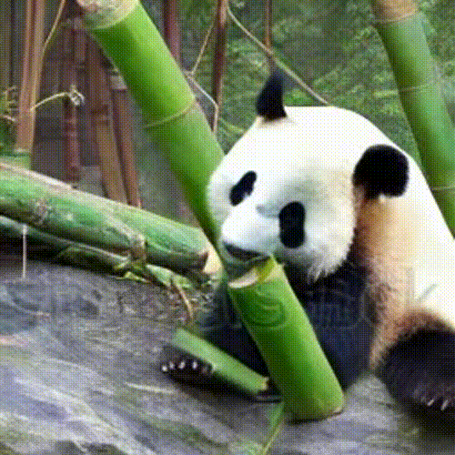
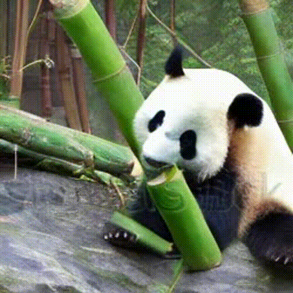

Panda

What’s black, white, and loves bamboo? Pandas! These iconic, solitary bears are easily recognized by their bold black-and-white markings and playful demeanor. Spending much of their day eating, pandas use their powerful jaws and “thumb-like” wrist bones to grasp and strip bamboo stalks. Though they appear docile, pandas can climb trees and swim with ease, helping them escape predators or navigate their forested habitats. Their gentle nature and charming behavior make them a global symbol for conservation.
Giant pandas feed primarily on bamboo, consuming up to 26–84 pounds daily to meet their energy needs. Occasionally, they may eat small animals or eggs. Their unique thumb-like wrist bone helps them grasp and strip bamboo stalks efficiently. Pandas spend 10–16 hours a day feeding due to bamboo's low nutritional value.
 

Habitat destruction from deforestation and agricultural expansion has significantly reduced the bamboo forests pandas depend on, confining them to isolated mountain ranges. Although poaching has decreased due to conservation efforts, habitat fragmentation remains a critical issue. Climate change also threatens bamboo availability, further endangering the species.

In China, giant pandas are found in the bamboo-rich forests of Sichuan, Shaanxi, and Gansu provinces. Protected areas such as the Sichuan Giant Panda Sanctuaries and nature reserves like Wolong and Qinling are critical habitats for the wild panda population and play a key role in ongoing conservation efforts.